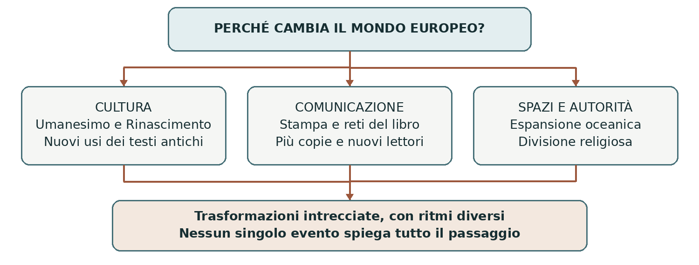
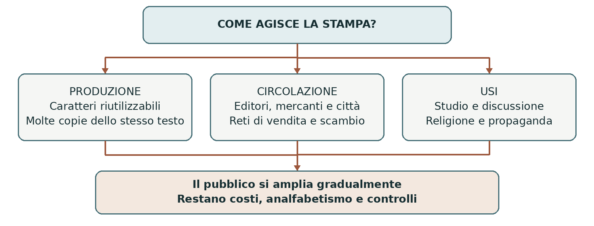
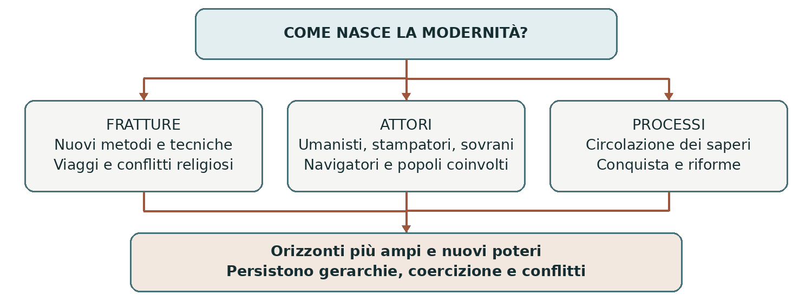

EUROPA E MONDO TRA QUATTROCENTO E CINQUECENTO
La nascita della modernità
Cultura, comunicazione, viaggi e fratture religiose
Fra il Quattrocento e il Cinquecento cambiò il modo in cui molti europei colti studiavano il passato, rappresentavano l’essere umano e conoscevano il mondo. La stampa moltiplicò i testi; le rotte oceaniche collegarono stabilmente continenti lontani; la Riforma spezzò l’unità religiosa dell’Occidente latino. Questi processi ebbero origini diverse e produssero opportunità, conflitti e nuove forme di dominio.
0. Domanda generatrice
Come cambia una società quando si ampliano gli strumenti del sapere e gli orizzonti geografici, mentre le autorità tradizionali vengono messe in discussione? Studiare la nascita della modernità significa ricostruire questo intreccio, senza immaginare un passaggio immediato da un Medioevo immobile a un mondo pienamente libero.
In sintesi La modernità prende forma attraverso trasformazioni collegate ma non identiche. Per riconoscerle dobbiamo partire dalle risorse e dalle tensioni già presenti nel tardo Medioevo.
1. Il mondo precedente
L’Europa tardomedievale possedeva città commerciali, università, botteghe, corti e reti di scambio. I libri circolavano soprattutto come manoscritti; il latino collegava gran parte della cultura dotta occidentale, mentre le lingue volgari avevano già una ricca produzione letteraria. Il Mediterraneo metteva in rapporto cristiani, musulmani ed ebrei, pur fra guerre e discriminazioni.
La religione aveva un ruolo centrale, ma questo non escludeva ragionamento, osservazione o iniziativa individuale. Nelle università si discutevano argomenti mediante la logica; mercanti e artigiani elaboravano competenze pratiche. Anche i classici erano conosciuti e studiati. La novità umanistica sarebbe consistita soprattutto in nuovi metodi di lettura, nel recupero di altri testi e nella rinnovata centralità della formazione letteraria.
In sintesi Le trasformazioni moderne si svilupparono dentro una società già dinamica. Nuovi eventi ne modificarono gli equilibri e ampliarono le possibilità di azione.
2. Le fratture
1453: la conquista di Costantinopoli
Il 29 maggio 1453 gli Ottomani guidati da Mehmed II conquistarono Costantinopoli e posero fine
all’Impero bizantino. L’evento modificò gli equilibri del Mediterraneo orientale e fu percepito come una
grave perdita nel mondo cristiano. È una delle date convenzionali scelte per segnare il passaggio all’età
moderna: non fece però terminare nello stesso momento tutti i caratteri della società medievale.
L’arrivo in Italia di studiosi e manoscritti greci contribuì alla vita culturale umanistica, ma i rapporti con
Bisanzio erano molto più antichi. Manuele Crisolora insegnava greco a Firenze già dal 1397.
L’Umanesimo, avviato nel Trecento, non nacque dunque dalla caduta della città. Anche sul piano
economico la conquista cambiò condizioni e rapporti di forza senza interrompere tutti i traffici: Venezia
continuò a commerciare con il mondo ottomano.
Più fratture, nessun automatismo
La stampa a caratteri mobili in Europa, l’espansione oceanica e le controversie religiose introdussero altri cambiamenti decisivi. Le esplorazioni portoghesi erano già in corso prima del 1453: cercare nuove rotte rispondeva a interessi commerciali, rivalità politiche, obiettivi religiosi e possibilità tecniche. Non fu la conseguenza automatica della chiusura dei commerci orientali.

In sintesi Una conquista politica, un’innovazione tecnica e una trasformazione culturale operano in modi diversi. Per capire come si collegano occorre osservare gli attori che le promuovono e chi ne subisce gli effetti.
3. Attori, gruppi e conflitti
Chi rende possibile il cambiamento?
L’Umanesimo e il Rinascimento coinvolsero studiosi, artisti, maestri, copisti, tipografi e committenti. Le opere richiedevano denaro, competenze e luoghi di lavoro: corti, città, botteghe e istituzioni ecclesiastiche sostenevano la produzione culturale anche per accrescere prestigio e autorità. L’iniziativa dei singoli si inseriva quindi in reti di collaborazione e dipendenza.
Le imprese oceaniche mobilitavano sovrani, investitori, marinai, cartografi e mercanti. Le monarchie iberiche cercavano rotte, ricchezze e possibilità di espansione. I popoli africani, asiatici e americani incontrati dagli europei avevano propri sistemi politici e interessi: reagirono con scambi, alleanze, resistenze e adattamenti. Non erano semplici comparse in una storia già decisa dall’Europa.
| Attori | Obiettivi e risorse | Vincoli e conflitti |
|---|---|---|
| Umanisti e artisti | Studiare, insegnare, creare; testi antichi e competenze di bottega. | Dipendenza dai committenti; controversie culturali e religiose. |
| Stampatori ed editori | Produrre e vendere libri; capitali, tecniche e reti commerciali. | Costi iniziali, domanda limitata, autorizzazioni e censura. |
| Sovrani e navigatori | Aprire rotte e ampliare potere, commercio e prestigio. | Rischi del viaggio, rivalità e opposizione delle popolazioni. |
| Riformatori e fedeli | Rinnovare fede, pratiche e organizzazione religiosa. | Contrasti dottrinali; scelte di principi e comunità. |
| Popolazioni colonizzate | Difendere terre, poteri e modi di vita. | Guerre, epidemie, imposizioni e sfruttamento. |
Un cambiamento non vissuto da tutti allo stesso modo
La disponibilità di nuovi libri e modelli culturali non eliminò le differenze sociali. Istruzione, denaro, sesso e posizione familiare condizionavano l’accesso allo studio. Alcune donne parteciparono alla cultura umanistica come autrici, lettrici e committenti, ma incontrarono ostacoli maggiori degli uomini. Per gran parte della popolazione il lavoro agricolo e le appartenenze locali continuarono a scandire la vita.
In sintesi Le trasformazioni dipendevano da molti soggetti con interessi differenti e risorse diseguali. Il primo processo da seguire riguarda il rapporto fra testi, educazione e immagine dell’essere umano.
4. Il processo storico
Umanesimo: tornare ai testi per comprenderli
L’Umanesimo si sviluppò in Italia dal XIV secolo e si diffuse poi in Europa. Attribuiva grande valore agli
studi di grammatica, retorica, poesia, storia e filosofia morale, detti studia humanitatis. Gli umanisti
cercavano manoscritti, confrontavano versioni e studiavano le lingue: volevano leggere gli autori antichi
nel loro contesto e distinguere testi autentici, errori e aggiunte.
Questo lavoro è legato alla filologia, cioè allo studio critico dei testi e della loro trasmissione. Il passato
classico non era stato completamente dimenticato: la novità consisteva nel recuperare opere, affinare i
metodi di lettura e proporre un modello educativo fondato sulla parola, sulla storia e sulla capacità di
giudizio. Tali competenze potevano servire alla vita civile, alla diplomazia e anche allo studio religioso.
Rinascimento: dignità, capacità e rappresentazione
Con Rinascimento si indica una più ampia trasformazione culturale e artistica, particolarmente intensa
nell’Italia del Quattrocento e del Cinquecento. Lo studio dell’antico si intrecciò con nuove ricerche sulla
prospettiva, sul corpo e sulle proporzioni. Botticelli, Leonardo, Michelangelo e Raffaello operarono in
contesti diversi, ma contribuirono a rendere visibile il valore attribuito alle capacità umane.
L’ideale dell’uomo artefice del proprio destino esprime fiducia nell’educazione, nell’impegno e nelle
possibilità dell’azione. Leonardo, attivo in pittura, studi anatomici e progetti tecnici, rappresenta
l’aspirazione a collegare saperi diversi. Non significa però che ogni individuo fosse libero da vincoli o
padrone assoluto della natura: si tratta di un ideale culturale, soprattutto delle élite.
| Concetto | Che cosa mette in evidenza | Precisazione |
|---|---|---|
| Umanesimo | Testi classici, lingue e formazione letteraria. | Inizia prima del 1453 e non esclude la fede. |
| Rinascimento | Rinnovamento culturale e artistico. | Ha tempi e forme differenti nei vari territori. |
| Antropocentrismo | Valore e capacità dell’essere umano. | È una prospettiva culturale, non una teoria astronomica. |
In sintesi La centralità dell’essere umano poteva convivere con una visione cristiana del mondo. La nuova cultura acquistò maggiore capacità di diffusione quando cambiarono produzione e circolazione dei libri.
La stampa cambia la comunicazione
Gutenberg e il libro riproducibile
Intorno alla metà del XV secolo Johannes Gutenberg, a Magonza, mise a punto un sistema di stampa
basato su caratteri metallici mobili, inchiostri adatti e torchio. I caratteri potevano essere ricomposti e
riutilizzati. La celebre Bibbia a 42 linee, realizzata intorno al 1454–1455, testimonia la maturità della
tecnica. Fu una svolta per l’Europa, non l’invenzione mondiale di ogni forma di stampa: in Asia esistevano
già tradizioni xilografiche e a caratteri mobili; il libro coreano Jikji, stampato con caratteri metallici, risale
al 1377.
La preparazione di un’edizione richiedeva investimenti, ma rendeva possibile produrre molte copie con maggiore rapidità e ridurre il costo per copia nelle tirature adeguate. Tipografie e reti commerciali si diffusero nelle città. Editori, correttori e librai collegavano il lavoro intellettuale a un mercato del libro sempre più articolato.

Più lettori, ma gradualmente
Libri, opuscoli e fogli stampati facilitarono studio, discussione e propaganda. La stampa contribuì alla circolazione dei testi in volgare e alla stabilizzazione di usi linguistici, ma non creò dal nulla le lingue nazionali. L’alfabetizzazione dipendeva anche da scuole, condizioni economiche e opportunità sociali: non nacque subito una società di lettori di massa. La lettura ad alta voce permetteva inoltre ai contenuti di raggiungere persone che non sapevano leggere.
Le autorità religiose e politiche compresero presto il valore del nuovo mezzo: lo usarono per diffondere idee e cercarono di controllarlo. Aumentarono così sia le possibilità di comunicazione sia le pratiche di censura. Lo stesso strumento poteva sostenere posizioni opposte.
In sintesi La stampa ampliò e accelerò la circolazione dei testi, senza determinare da sola il contenuto delle idee. Intanto i viaggi oceanici trasformavano le conoscenze geografiche e i rapporti fra popolazioni lontane.
Nuovi spazi, nuove divisioni
1492: un collegamento duraturo fra continenti
Il 12 ottobre 1492 la spedizione di Cristoforo Colombo, sostenuta dai sovrani spagnoli, raggiunse un’isola
dei Caraibi. Colombo cercava una rotta occidentale per l’Asia e interpretò i territori incontrati secondo
quell’obiettivo. Non comprese subito di essere giunto presso un continente distinto. Le Americhe erano
abitate da popolazioni con storie, culture e organizzazioni proprie; contatti norreni con il Nord America
erano inoltre avvenuti secoli prima.
La parola “scoperta” esprime perciò un punto di vista europeo. La novità storica del 1492 fu l’avvio di collegamenti transatlantici duraturi e di una successiva espansione coloniale. I viaggi ampliarono e corressero le conoscenze geografiche: non dimostrarono per la prima volta la sfericità della Terra, già nota alla cultura dotta medievale. In seguito i conquistatori spagnoli abbatterono gli imperi mexica e inca, anche sfruttando conflitti locali e alleanze indigene.
Gli scambi di piante, animali e prodotti trasformarono economie e alimentazione. Ma conquista, lavoro forzato ed epidemie provocarono conseguenze devastanti per molte popolazioni americane. Si ampliò inoltre la tratta atlantica di africani ridotti in schiavitù. I traffici atlantici acquisirono crescente rilievo senza cancellare subito il Mediterraneo né le grandi reti asiatiche.
1517: dalla disputa religiosa alla Riforma
Nel 1517 Martin Lutero diffuse le 95 tesi sulle indulgenze. Nella dottrina cattolica l’indulgenza riguarda
la remissione della pena temporale per peccati già perdonati: le pratiche di raccolta di denaro e la
predicazione che le accompagnava suscitarono forti contestazioni. La disputa si ampliò fino a investire
l’autorità del papa, il rapporto fra fede e salvezza e il ruolo della Scrittura.
La Riforma luterana affermò la giustificazione per fede e l’autorità della Bibbia. Il sacerdozio universale dei credenti valorizzava il rapporto dei fedeli con Dio, pur mantenendo ministeri e organizzazione ecclesiastica. In contesti differenti si svilupparono le correnti riformate legate a Zwingli e Calvino e la separazione della Chiesa inglese da Roma. La stampa, il sostegno politico e le scelte delle comunità contribuirono alla diffusione; la rottura non era già tutta contenuta nelle tesi del 1517.
In sintesi L’espansione oceanica e la Riforma modificarono geografia, potere e appartenenze. Per valutarne il significato bisogna confrontare gli ideali di rinnovamento con gli strumenti materiali che li fecero circolare.
5. Le fonti in dialogo
Una concezione dell’essere umano: Pico della Mirandola
Fonte: Giovanni Pico della Mirandola, discorso del 1486 noto come Oratio de hominis dignitate. Fu
preparato per introdurre una disputa dotta sulle sue tesi, prevista a Roma e poi impedita; non venne
pronunciato in quell’occasione. Il destinatario era un pubblico di studiosi, non l’intera popolazione europea.
Contenuto — parafrasi didattica: Pico immagina Dio che assegna all’essere umano la possibilità di formarsi mediante le proprie scelte. La sua dignità dipende dalla capacità di orientare la propria vita, elevandosi attraverso conoscenza e responsabilità.
Interpretazione: il testo valorizza la libertà umana dentro un orizzonte religioso. Non documenta
l’abolizione delle gerarchie sociali e non dimostra che tutti nel Rinascimento avessero la stessa concezione
della libertà. Domanda: perché questa fonte rende inadeguata l’opposizione assoluta fra fede cristiana e
centralità dell’essere umano?
Leggi la fonte: Pico, Oration on the Dignity of Man (1486), Fordham University
Un oggetto che comunica: la Bibbia di Gutenberg
Fonte materiale: Bibbia latina a 42 linee, prodotta a Magonza intorno al 1454–1455. Era un’opera costosa e di grande impegno tecnico, destinata a istituzioni e acquirenti in grado di sostenerne il prezzo. L’impaginazione e le decorazioni degli esemplari mantenevano legami con il mondo del manoscritto.
Interpretazione: una tecnica innovativa venne usata per riprodurre un testo religioso tradizionale.
L’oggetto mostra l’intreccio fra novità e continuità, ma un solo volume non permette di misurare quanti
europei sapessero leggere. Domanda: perché un libro a stampa non è automaticamente una prova di
alfabetizzazione di massa?
Osserva e approfondisci: The Gutenberg Bible, Biblioteca Reale di Danimarca
| Confronto | Discorso di Pico | Bibbia di Gutenberg |
|---|---|---|
| Che cosa documenta | Un progetto filosofico e culturale. | Una tecnica e una forma materiale del libro. |
| Continuità | La centralità di Dio nella riflessione. | Testo sacro e tradizioni del manoscritto. |
| Novità | Forte enfasi sulla capacità di formarsi. | Produzione di molte copie mediante caratteri mobili. |
In sintesi Le fonti mostrano che innovazione e tradizione potevano convivere. Questa compresenza aiuta a valutare le conseguenze senza trasformare la modernità in una storia di progresso automatico.
6. Conseguenze e nuovo assetto
Ciò che cambia e ciò che resta
La cultura umanistica rafforzò lo studio critico dei testi e il valore educativo della storia e delle lettere. Il Rinascimento trasformò le arti e il prestigio dell’artista. La stampa rese più ampia la circolazione delle idee; il suo effetto dipese però da scuole, mercati, lingue e scelte politiche. Le innovazioni non raggiunsero ovunque nello stesso tempo gli stessi gruppi sociali.
L’espansione oceanica creò collegamenti sempre più intensi e nuovi imperi coloniali. Per alcuni gruppi europei aprì opportunità economiche; per molte popolazioni colonizzate significò espropriazione, coercizione e perdita di vite. La connessione fra continenti non coincise quindi con rapporti paritari.
La Riforma infranse l’unità religiosa dell’Occidente latino, già attraversato in precedenza da dissensi. Non divise un’Europa fino ad allora interamente cattolica: esistevano da secoli cristianità orientali e altre religioni. Le nuove confessioni non produssero subito libertà di coscienza generalizzata; autorità cattoliche e protestanti imposero discipline e perseguitarono dissidenti. Le monarchie si rafforzarono in contesti diversi: la nascita degli Stati non fu un semplice effetto della divisione religiosa.
In sintesi Il nuovo assetto ampliò conoscenze, comunicazioni e poteri, ma mantenne e trasformò forti disuguaglianze. La domanda iniziale richiede quindi una risposta capace di tenere insieme possibilità e limiti.
7. Conclusione
La modernità nacque dall’interazione fra innovazioni culturali e tecniche, espansione geografica e crisi delle autorità religiose. Gli attori usarono nuove risorse per perseguire obiettivi differenti, con conseguenze spesso impreviste. “Moderno” è una categoria con cui gli storici organizzano e interpretano queste trasformazioni: non significa automaticamente più giusto, più razionale o più libero.
Sintesi finale
L’Umanesimo rinnovò lo studio dei testi e la formazione delle élite. Il Rinascimento valorizzò capacità umane, ricerca artistica e modelli classici. La stampa ampliò gradualmente produzione e circolazione dei libri. Il 1453 mutò gli equilibri mediterranei senza chiudere tutti i commerci. Dal 1492 i contatti atlantici divennero duraturi e si sviluppò la colonizzazione. La Riforma produsse confessioni diverse, conflitti e nuove discipline religiose. La modernità fu una trasformazione diseguale, fatta di rotture e continuità.
Per studiare e collegare
Coordinate essenziali
Spazio: città italiane, Europa occidentale e centrale, Mediterraneo, Atlantico e Americhe; collegamenti con
Africa e Asia. Tempo: origini umanistiche nel XIV secolo; trasformazioni centrali nei secoli XV–XVI.
Periodizzazione: 1453, 1492 e 1517 evidenziano aspetti diversi del passaggio all’età moderna. Sono date
convenzionali, non interruttori della storia.
Saperi irrinunciabili
1. Umanesimo e Rinascimento si svilupparono a partire da risorse e trasformazioni medievali.
2. La filologia confronta e interpreta criticamente i testi e la loro trasmissione.
3. La centralità dell’essere umano poteva convivere con la fede cristiana.
4. Il 1453 segnò la fine dell’Impero bizantino, non l’inizio di ogni innovazione moderna.
5. La stampa europea moltiplicò le copie; lettura e alfabetizzazione crebbero gradualmente.
6. I viaggi oceanici ebbero cause commerciali, politiche, religiose e tecniche.
7. Nel 1492 Colombo raggiunse i Caraibi cercando l’Asia; le Americhe erano già abitate.
8. La connessione atlantica produsse scambi, conquista, epidemie e lavoro coatto.
9. La Riforma si sviluppò dalla disputa del 1517 attraverso scelte religiose e politiche.
10. Modernità, pluralità confessionale e libertà universale non sono sinonimi.
Mappa concettuale

Nesso da spiegare: nuove possibilità di conoscere e comunicare accrescono le risorse degli attori; le loro scelte cambiano società e rapporti di potere. Gli esiti dipendono dai conflitti e dalle condizioni concrete.
Strumenti e attività
Linea del tempo ragionata
| Quando | Snodo e significato |
|---|---|
| XIV secolo | Prime esperienze umanistiche: nuovo rapporto critico con i classici. |
| 1397 | Crisolora insegna greco a Firenze: contatti culturali anteriori al 1453. |
| 1453 | Conquista ottomana di Costantinopoli: fine dell’Impero bizantino. |
| Circa 1454–1455 | Bibbia di Gutenberg: maturità della stampa europea a caratteri mobili. |
| 1492 | Viaggio di Colombo: avvio di collegamenti transatlantici duraturi. |
| 1517 | 95 tesi di Lutero: inizio convenzionale della Riforma protestante. |
Vocabolario essenziale
Umanesimo: movimento centrato sugli studi letterari e sulla lettura critica dei classici. Rinascimento:
trasformazione culturale e artistica sviluppata soprattutto nei secoli XV–XVI. Filologia: studio critico dei
testi. Antropocentrismo: prospettiva che valorizza l’essere umano. Mecenatismo: sostegno alla
produzione culturale da parte di un committente. Caratteri mobili: elementi tipografici riutilizzabili.
Volgare: lingua parlata e scritta diversa dal latino. Colonizzazione: insediamento e imposizione di un
dominio su altri territori e popolazioni. Confessione: comunità religiosa definita da dottrine e istituzioni.
Censura: controllo e limitazione della circolazione dei contenuti.
Attività di comprensione e argomentazione
1. Correggere un nesso. Riscrivi: “Nel 1453 i commerci si fermarono e nacquero Umanesimo ed
esplorazioni”, usando due prove cronologiche. 2. Confrontare fonti. Spiega in 10–12 righe come il
discorso di Pico e la Bibbia di Gutenberg mostrino insieme novità e continuità. 3. Cambiare prospettiva.
Confronta il significato del 1492 per un mercante europeo e per una comunità caraibica, distinguendo
opportunità e conseguenze. 4. Argomentare. Sostieni o correggi la tesi “Più libri producono
automaticamente più libertà”, con esempi tratti dalla lezione.
Materiale di partenza e riferimenti
Rielaborazione di «La nascita della modernità». Sono stati precisati i rapporti fra Medioevo e Rinascimento, gli effetti del 1453, la diffusione della stampa e i diversi significati di espansione e Riforma. Riferimenti di controllo e approfondimento (titoli cliccabili):
Treccani — Umanesimo; recupero dei classici e metodi di studio
Metropolitan Museum — Venice and the Islamic World, 828–1797
UNESCO — Jikji; la tradizione asiatica della stampa a caratteri metallici
Library of Congress — 1492: An Ongoing Voyage
Martin Luther — The 95 Theses; testo della disputa sulle indulgenze